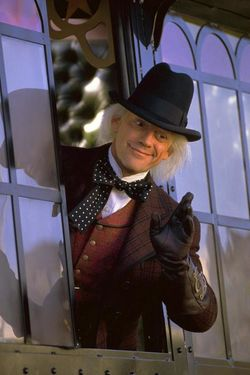

Emmett Brown

"If only I don't die of a heart attack or a stroke first," Dr. Emmett Brown muttered aloud. / He was close to seeing his dream become a reality. No doubt about that. One by one the scientific and physical obstacles had been eliminated. Was this to be "the day"? / "Don't count on it," he replied to himself. There was no use getting too high, he reasoned. / At sixty-five, he was one of the nation's most talented and unheralded inventors. In fact no one except Marty McFly even knew of his accomplishments, but that didn't matter. Soon all that would change. His lifetime of struggle, of being the recipient of ridicule, would suddenly turn golden. "
| Biographical information | |
| Date of birth | 1914 |
| Age (1985) | 65 |
| Physical description | |
| Gender | Male |
| Hair color | White |
| Eye color | Brown |